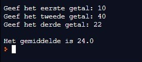

Maak een programma om de inhoud van een balk te berekenen. De gebruiker voert de hoogte, de breedte en de diepte in (in cm), en de computer berekent de inhoud (in cm3) die op het scherm wordt weergegeven. Het is de bedoeling dat de gebruiker gehele getallen invoert.
Maak een programma om het gemiddelde van 3 gehele getallen te berekenen. Hieronder vind je de schermafdruk van een uitvoering van het programma:Maak gebruik van passende commentaarregels om de verschillende stappen te aan te geven of te verduidelijken.
Hieronder vind je de schermafdruk van een uitvoering van het programma:
